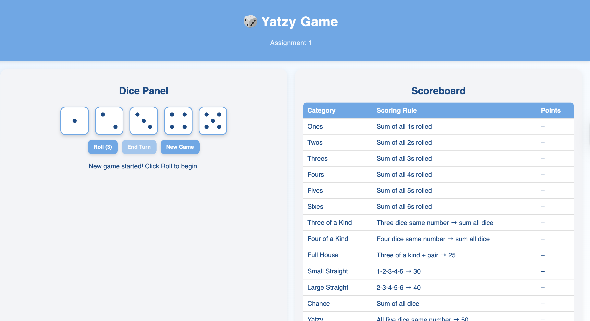

1) Yatzy Game Summary
Yatzy is a dice game where players roll five dice up to three times per turn to achieve scoring combinations such as Three/Four of a Kind, Full House, Small/Large Straight, Chance, and Yatzy (five of a kind). My implementation focuses on clear state management, reusable UI components, and accurate scoring logic aligned with the assignment requirements.

*Add your real screenshot later as project2/assets/yatzy_overview.png*
3) Key Scoring Algorithms
Language-agnostic snippets that mirror my assignment logic.
function tally(dice):
counts = {1:0,2:0,3:0,4:0,5:0,6:0}
for v in dice: counts[v] += 1
return counts
function fullHouse(dice):
counts = sort(tally(dice).values())
return 25 if (3 in counts and 2 in counts) else 0
function smallStraight(dice):
s = set(dice)
return 30 if (
{1,2,3,4}.issubset(s) or {2,3,4,5}.issubset(s) or {3,4,5,6}.issubset(s)
) else 0
function largeStraight(dice):
s = set(dice)
return 40 if (s == {1,2,3,4,5} or s == {2,3,4,5,6}) else 0
function ofAKindScore(dice, n):
counts = tally(dice)
return sum(dice) if any(counts[v] >= n for v in counts) else 0
function yatzy(dice):
return 50 if len(set(dice)) == 1 else 0
function upperSection(dice, face): # face ∈ {1..6}
return sum(v for v in dice if v == face)